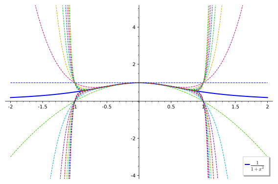

Plot of \(\sin(x)\) and its degree 5 Maclaurin polynomial. The polynomial starts diverging visibly from the plot of \(\sin(x)\) when \(|x|\gt 2\text{.}\)
Figure8.1.Plot of \(\sin(x)\) and its degree 5 Maclaurin polynomial.
Figure 8.1 compares \(\sin(x)\) to its degree 5 Maclaurin polynomial. We notice that the polynomial is a poor approximation of \(\sin(x)\) when \(|x| \gt 2\text{.}\) What can we do about this? We could use Maclaurin polynomials of ever higher degree, but these get ever more complicated.
The issue is that Maclaurin series are computed based on the value of the function and its derivatives around \(x=0\text{,}\) so it’s not surprising that they best approximate the function near \(x=0.\) If for some reason we’re more interested in the function near another value, say near \(x=a\text{,}\) then instead of computing Maclaurin polynomials of high degree, we can simply shift our function along the \(x\)-axis until the point of interest lies above \(x=0\text{,}\) compute the Maclaurin polynomials of the shifted function, and then shift back.
In other words, we consider the shifted function \(g(x) = f(x+a)\text{,}\) then compute the Maclaurin series for \(g(x)\text{:}\)
is called the Taylor series for \(f(x) \) about \(x=a. \)
Note that a Maclaurin series is simply a Taylor series centred at \(x=0.\)
The degree \(n\) Taylor polynomial of \(f(x)\) centred at \(x=a\) is - you guessed it - the sum of the terms of the Taylor series of degree at most \(n\text{.}\) The degree \(n\) Taylor polynomial of a function is also called its nth order approximation.
Example8.3.
Compute the Taylor series of the function \(\cos(x)\) centred at \(x=\frac{\pi}{4}\text{.}\)
Solution.
We compute the derivatives of \(f(x) = \cos(x)\) at \(x=\frac{\pi}{4}\text{:}\)
In order to find the second order approximation for \(f(x)=e^{-\frac{x}{3}} \) about \(x=2 \) we need to evaluate \(f \) and its first two derivatives at \(x=2\text{.}\) So,
Thus the second order approximation for \(f(x)=e^{-\frac{x}{3}} \) about \(x=2, \) (or the Taylor polynomial of degree \(2, \) for \(f(x)=e^{-\frac{x}{3}} \) about \(x=2\)), is
Since we already know the Taylor series for \(\cos(x) \) about \(x=\frac{\pi}{2} \) we can obtain the \(4^{\text{th}} \) degree Taylor polynomial for \(f(x)=x\cos(x) \) about \(x=\frac{\pi}{2} \) as follows
Find the Taylor series for \(f(x)=\ln(x)\) about \(x=e.\)
2.
Find the Taylor polynomial of degree \(3 \) for \(f(x)=\dfrac{1}{1-x} \) about \(x=2. \)
3.
Find the Taylor polynomial of degree \(4 \) for \(f(x)=x\ln(x) \) about \(x=e. \)
4.
Find the \(3\)rd degree Taylor polynomial for \(f(x)=x^2 e^{x} \) about \(x=1. \)
Remark8.7.A little remark.
Computer algebra systems usually have commands for Taylor series. For example, here in Figure 8.8 is an example of a query to Wolfram Alpha that will work.
Figure8.8.
Section8.2Geometric series
So far, we have succeeded in finding various useful power series expressions for the functions \(\sin(x)\text{,}\)\(\cos(x)\) and \(e^x\text{.}\) What about other functions? A particularly instructive case is the function
You can use induction on \(n\text{,}\) or just multiply out and cancel terms.
(b)
Assuming that \(|x| \lt 1\text{,}\) deduce (8.2) from (8.3).
Hint.
Take the limit as \(n \rightarrow \infty\text{.}\)
The series in (8.2) is an example of a geometric series (sometimes also called a geometric progression). More generally, a geometric series is one of the form
\begin{equation}
\sum_{k=0}^\infty ar^k = a + ar + ar^2 + \cdots, \qquad\text{where}\quad |r|\lt 1.\tag{8.4}
\end{equation}
Here \(a\) is the starting term, and each subsequent term equals the previous terms multiplied by \(r\text{,}\) which we call the common ratio.
Let’s plot the various Maclaurin polynomials for \(f(x)=1/(1-x)\text{:}\)
Plot of the Maclaurin polynomials for \(f(x)=1/(1-x)\text{.}\) Note how they only approximate \(1/(1-x)\) when \(|x| \lt 1\text{.}\)
Figure8.11.Maclaurin polynomials for \(f(x)=1/(1-x)\)
We immediately notice that the Maclaurin polynomials are wildy different from \(1/(1-x)\) when \(|x| \geq 1\text{.}\)
Section8.3Convergence issues
Of course, the problem is that the series (8.2) does not converge unless \(|x| \lt 1\) - after all, if \(|x| \geq 1\text{,}\) then the individual terms \(x^k\) do not shrink to zero, and the partial sums cannot converge to a limit. This is true for all series:
Theorem8.12.The Divergence Test.
If the terms \(t_k\) of the series \(\displaystyle \sum_{k=1}^{\infty}t_k\) do not approach \(0\) as \(k\to\infty\) then the series diverges.
This is obvious if you think about it: if the series converges, then the partial sums (running totals) tend to some fixed limit. But this means that the changes from one partial sum to the next (i.e. the terms of the series) must shrink to zero.
We will soon see that the converse is not true: there are series, whose terms tend to zero, but which nevertheless diverge. One can think of this problem as the terms not tending to zero fast enough.
Most series aren’t obligingly geometric series, but a similar principle applies: if the ratios of consecutive terms stay small (specifically, tend to a value strictly between \(1\) and \(-1\)), then we can expect convergence:
Theorem8.15.The Ratio Test.
For the series \(\displaystyle \sum_{k=1}^{\infty}t_k\text{,}\) let \(\displaystyle L=\lim_{k\to \infty}\left|\dfrac{t_{k+1}}{t_k}\right|\text{.}\) If
\(L<1\) then the series converges
\(L>1\) then the series diverges
\(L=1\) then the test is inconclusive
In other courses you will learn more about convergence of series and in particular you will see more convergence tests. Annoyingly, all convergence tests have cases in which they’re inconclusive. One can actually prove that, in a suitable technical sense, a universal convergence test cannot exist.
Since \(L = \frac{1}{2} \lt 1\text{,}\) by the ratio test this series converges. (Notice that the ratio test doesn’t tell us to what number the series converges to. In this case it happens to be \(3\text{.}\))
Section8.5Convergence of power series
It turns out that the Ratio Test is well suited for testing the convergence of power series. Consider a general power series, of the form
We’d like to know for which values of \(x\) this series converges. After all, if the series doesn’t converge for a particular \(x\text{,}\) then it tells us nothing about the value of the function at \(x\text{.}\)
Firstly, when \(x=a\text{,}\) then \(f(a) = c_0 + 0 + 0 + \cdots\) obviously converges to the first term \(c_0\text{.}\) In other words, a power series always converges at its centre.
For other values of \(x\text{,}\) we apply the Ratio Test. To do so, we check the (absolute values of) ratios of consecutive terms, and try to determine if they converge to something smaller than 1. Due to the nature of power series, there is some cancellation in this ratio:
For the Ratio Test to apply, this must converge to some \(L\) as \(k \rightarrow \infty\text{.}\) This depends on the ratios of the coefficients \(c_k\) of the power series. Assuming the ratios converge to something, we find three possibilities.
Case 1. If \(\displaystyle \lim_{k\rightarrow\infty} \frac{c_{k+1}}{c_k} = 0\) then the series converges for all \(x\text{:}\)
Thus the Maclaurin series for \(e^x\) converges for all values of \(x\text{.}\)
It’s not hard to show that the same holds for the Taylor series of \(f(x) = e^x\text{,}\)\(\cos(x)\) and \(\sin(x)\) about any centre. The reason is that the derivatives \(f^{(n)}(a)\) are bounded (by \(e^a\) in the case of \(f(x)=e^x\text{,}\) and by \(1\) in the case of \(f(x)=\cos(x)\) or \(f(x)=\sin(x)\)), thus in the Ratio Test calculation, the factorials in the denominators dominate everything.
Case 2. If \(\displaystyle \lim_{k\rightarrow\infty} \frac{c_{k+1}}{c_k} = C \neq 0, \infty\) then the series converges for \(|x-a| \lt R = \frac{1}{C}\) and diverges if \(|x-a| \gt R\text{:}\)
\begin{align*}
L = \lim_{k\to\infty}\left| \frac{c_{k+1}(x-a)^{k+1}}{c_k(x-a)^k} \right| \amp = \lim_{k\to\infty}\left|\frac{c_{k+1}}{c_k} \right| \cdot |x-a|\\
\amp = C |x-a|.
\end{align*}
This will converge if \(C |x-a| = L \lt 1\text{,}\) i.e. when \(|x-a| \lt \frac{1}{C}\text{.}\)
In this case, we call \(R\) the radius of convergence of the power series. Basically, the series converges if the distance from \(x\) to the centre \(a\) is less than the radius of convergence \(R\text{.}\) If this distance is greater than \(R\text{,}\) then the series diverges.
In other words, the series converges for \(x\) inside the open interval \((a-R, a+R)\text{,}\) and diverges outside the closed interval \([a-R, a+R]\text{.}\)
What happens on the endpoints of these intervals, i.e. when \(x = a \pm R\text{?}\) The Ratio Test tells us nothing. All we know at this point is that there is an interval of convergence, of the form
Now \(L \lt 1\) when \(|x-1| \lt \frac{1}{3}\text{.}\) So we find that the series converges for \(|x-1| \lt \frac{1}{3}\text{,}\) i.e. on the interval \((\frac{2}{3}, \frac{4}{3})\text{,}\) and the radius of convergence is \(R=\frac{1}{3}\text{.}\)
Case 3. If \(\displaystyle \lim_{k\rightarrow\infty} \frac{c_{k+1}}{c_k} = \infty,\) then the series diverges for all \(x\neq a\text{:}\)
so \(L = 3|x-1| \gt 1\) unless \(x = a\text{.}\) In this case we say the radius of convergence is zero: \(R=0\text{.}\)
Just to round things off, in the first case, where the series converges for all \(x\text{,}\) we say that it has infinite radius of convergence.
Section8.6Algebra of infinite series
Computing repeated derivatives gets old really quickly. Often a much quicker way to get power series expansions for given functions is to manipulate a known series.
In Table 8.19 below we have listed the Maclaurin series for a small set of basic functions of science and engineering. These series can all be relatively easily derived from first principals as discussed in previous lectures. However, for some more complex functions it is easier to find their Maclaurin series by starting from known series rather than trying to find the series from scratch. We will look at two commonly used techniques:
Manipulating/Substituting into known series.
Differentiating/Integrating known series.
Table8.19.Some Important Maclaurin Series (and their intervals of convergence):
which will converge for all real values of \(x. \)
Differentiating/Integrating Known Series.
As the theorem below says, we can also use differentiation and integration to work out new Maclaurin series expansions from ones that we already know. The proof of this theorem is beyond the scope of this course.
Theorem8.23.
If \(f(x)=\sum\limits_{k=0}^{\infty}c_{k}x^{k}\) with radius of convergence \(R\) then
\(f'(x)=\sum\limits_{k=0}^{\infty}k c_{k}x^{k-1}\) with radius of convergence \(R\text{,}\)
\(\int f(x)dx=K+ \sum\limits_{k=0}^{\infty} \dfrac{c_{k}}{k+1}x^{k-1}\) with radius of convergence \(R\) (where \(K\in\mathbb{R}\)).
Note that the behaviour of the series (i.e. whether it converges or diverges) at the endpoints may change when it is differentiated or integrated.
Example8.24.
Find the Maclaurin series for \(f(x)=\dfrac{1}{(1-x)^{2}}.\)
Answer.
\(\dfrac{1}{(1-x)^{2}}=\displaystyle\sum_{k=1}^{\infty} k x^{k-1}\)
Solution.
Notice that \(\int \frac{1}{(1-x)^{2}} dx=\frac{1}{1-x}, \) or put the other way, \(\frac{1}{(1-x)^{2}}=\frac{d}{dx} \left(\frac{1}{1-x}\right). \) Since we know the Maclaurin series for \(\frac{1}{1-x} \) we can differentiate this series to obtain the Maclaurin series for \(\frac{1}{(1-x)^{2}}. \) So, on \(\lvert x\rvert < 1, \)
Notice that \(\frac{d}{dx}(\ln(1+x)), \) or put the other way, \(\ln(1+x)=K+\int \frac{1}{1+x} dx\text{.}\) Since we know the Maclaurin series for \(\frac{1}{1+x} \) we can integrate this series to obtain the Maclaurin series for \(\ln(1+x).\) So, on \(\lvert x\rvert < 1, \)
Find the Maclaurin series for \(f(x)=\dfrac{1}{3+2x}. \)
2.
Find the Maclaurin series for \(f(x)=\dfrac{1-x^2}{5-3x^2}. \)
3.
Find the Maclaurin series for \(f(x)=\dfrac{1}{(1-2x)^2}. \)
4.
Find the Maclaurin series for \(f(x)=\tan^{-1}(x). \)
5.
Use a sixth degree Maclaurin polynomial to estimate \(f(x)=\displaystyle\int_{0}^{1}e^{-x^{2}}dx. \)
Section8.7Advanced topics
Subsection8.7.1Why radius 1?
In Example 8.20 we worked out the Maclaurin series of \(f(x)=\dfrac{1}{1+x^{2}} \) and found that it has radius of convergence \(R=1\text{.}\)
What’s wrong with this function? The plot in Figure 8.26 shows a perfectly well-behaved function, defined on all of \(\R\text{,}\) but its Maclaurin polynomials are all over the place when \(|x| \gt 1\text{.}\) Why is the radius of convergence so small?

A plot of \(y=\frac{1}{1+x^2}\) together with plots of its Maclaurin polynomials up to degree 30.
Figure8.26.Approximations to \(\frac{1}{1+x^2}\) by its Maclaurin polynomials up to degree 30.
The answer becomes clear if we view \(f(x)=\frac{1}{1+x^2}\) as a function of a complex variable! Over the complex numbers, the denominator vanishes at \(x = \pm i\text{,}\) so the function blows up at these values. These are at distance 1 from the origin, so the disc of convergence in the complex plane cannot include these points, and so the radius of this disc (the radius of convergence!) cannot be larger than 1.
In fact, it is a result from Complex Analysis that the radius of convergence of the Taylor series of an analytic function is always the distance from the centre of the Taylor series to the nearest singularity of the function. In our case, this distance is 1.